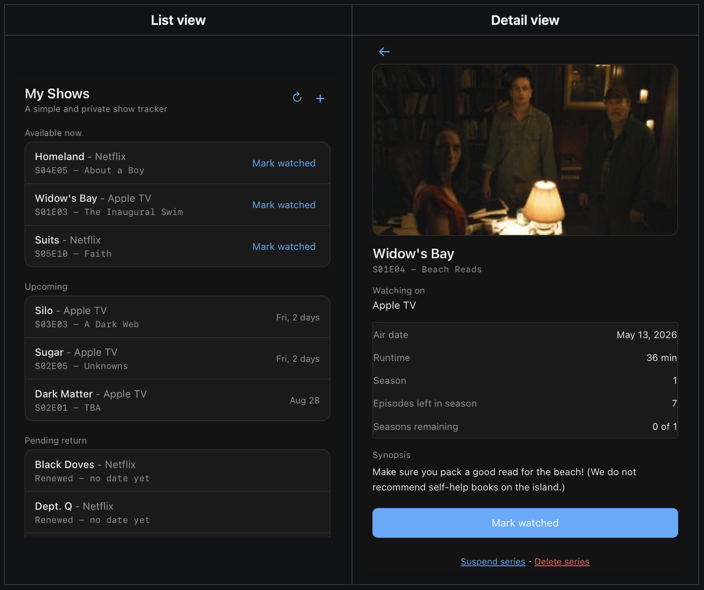

My Shows
Always know what episode to watch next.
Free. No install. No hosting. No account. Just a page that remembers where you left off.
My Shows is a simple TV episode tracker: search for a show, tell it where you left off, and it tells you what's next. It's free for everyone to use — there's nothing to sign up for and nothing to pay for — though donations to help fund my minimal costs are always welcome.

Opens straight in your browser. Works on phone, tablet, or desktop. New to it? The how-to-use guide covers everything.

The list view and an episode's detail view
Nothing to install. Nothing to host.
This isn't an app you download, and it isn't something you have to set up a server for. It's a single web page that runs entirely in your browser. Open the link, use it, and (optionally) add it to your home screen for quick access — that's just a bookmark shortcut, not a real installation. There's nothing to build, deploy, update, or maintain on your end.
Free
No subscription, no ads, no in-app purchases. It costs nothing to use because it costs almost nothing to run.
No install
It's a web page, not an app store download. Open it in any modern browser and it works immediately.
No hosting to set up
It's already hosted. You don't need your own server, domain, or technical setup of any kind.
How it works
- Search for a show by name. Show data comes from TVmaze, a free public TV database.
- Tell it the last episode you watched (or leave it blank if you're starting fresh).
- It tells you exactly what to watch next, and groups your shows into Available now, Upcoming, Pending return, and Completed.
- Tap "Mark watched" and it moves on to the next episode automatically.
See the full how-to-use guide → (adding a show, the four categories, suspending vs. deleting a series, with pictures.)
Your data stays yours
There are no accounts and no server storing your watch list. Everything you track is saved only in your own browser's local storage, on your own device. The only outside request this page ever makes is looking up show and episode information from TVmaze — your list itself is never sent anywhere.
Limitations — read this before you rely on it
- No sync between devices. Your watch list lives in one browser on one device. Adding a show on your phone won't make it appear on your laptop, and there's no account to tie them together.
- Your data can be lost, especially on iOS. iOS does not guarantee that a website's local storage survives indefinitely — it can be cleared under storage pressure, after a restart, or after a period of inactivity, even for pages added to your home screen. This is an iOS platform limitation, not something this page can prevent.
- Backups are manual, not automatic. A backup/restore feature is built in (the ↻ icon), but it only runs when you use it. If you want to protect against the data loss above, download a backup occasionally — especially before an iOS update.
- No notifications. Nothing will alert you when a new episode airs — you have to open the page to check.
- Depends on TVmaze's data. If a show isn't in TVmaze's database, or its episode data has gaps, that carries through here too.
No guarantees
This is a free, independently-run hobby project, not a commercial product with a service agreement. It's offered as-is, with none of the following guaranteed:
- Availability. The site could go down temporarily, change, or be discontinued entirely at any time, without notice.
- Data accuracy. Show and episode information comes from TVmaze's free public database and isn't independently verified — errors, gaps, or delays in their data carry through here.
- Data preservation. As covered above, your watch list can be lost (especially on iOS) and there's no server-side backup to recover it from.
- Fitness for any particular purpose. Use it because it's useful to you, not because it's promised to work a certain way.
Use it at your own discretion. If any of this matters a lot to you, keep your own backups (see above) and don't treat this as your only record of what you've watched.
New to it? See the how-to-use guide.